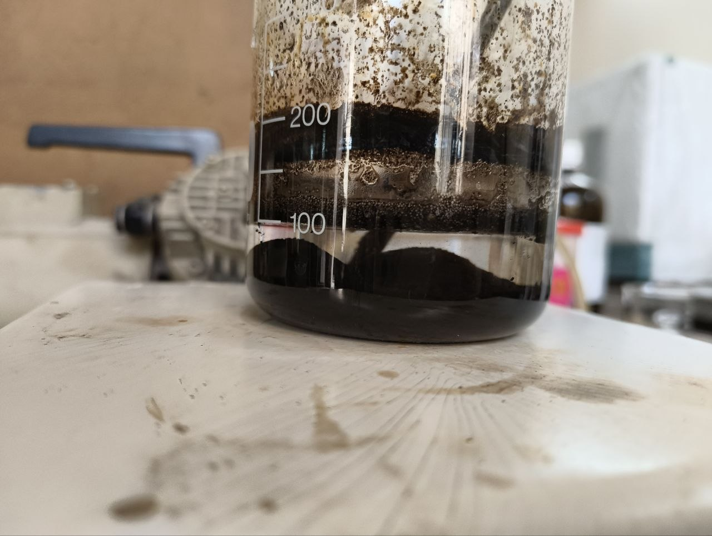
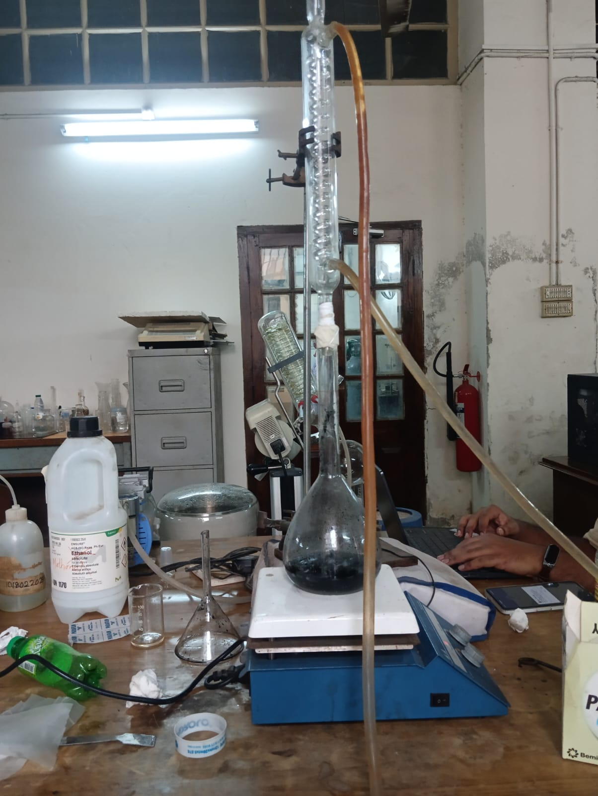
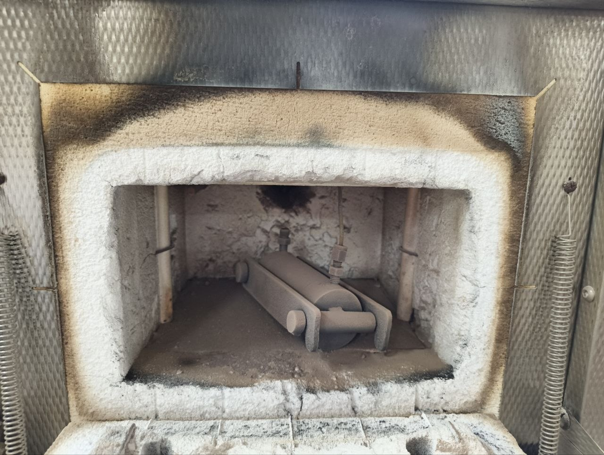

Undergraduate Thesis
Ca–Fe Oxide on Carbon Catalyst for Biodiesel Production
Institution:
Bangladesh University of Engineering and Technology (BUET)
Department:
Chemical Engineering
Supervisor:
Dr. Kazi Bayzid Kabir
Project Overview
This undergraduate thesis investigated the synthesis and application of a heterogeneous CaO–Fe₃O₄ catalyst supported on activated carbon for biodiesel production from soybean oil via transesterification. The catalyst was synthesized using co-precipitation, wet impregnation, and calcination techniques, and its performance was evaluated by comparing three carbon-to-oxide compositions. The resulting biodiesel was characterized through density, cloud point, pour point, CHNS elemental analysis, higher heating value (HHV), and X-ray diffraction (XRD) analysis of the catalyst to assess its suitability as a renewable diesel alternative.
Research Experience
- Synthesized Fe₃O₄ nanoparticles using the co-precipitation method.
- Fabricated CaO-Fe₃O₄/activated carbon heterogeneous catalysts through wet impregnation and nitrogen-atmosphere calcination.
- Prepared and evaluated three catalyst formulations (90:10, 80:20, and 70:30 carbon-to-oxide ratios).
- Produced biodiesel from soybean oil via base-catalyzed transesterification using methanol.
- Characterized catalyst crystallinity using X-ray diffraction (XRD).
- Measured biodiesel properties including density, cloud point, pour point, CHNS elemental composition, and higher heating value (HHV).
- Analyzed the influence of catalyst composition on biodiesel yield and fuel properties.
- Achieved a maximum biodiesel yield of 90.4% using the 70:30 carbon-to-oxide catalyst formulation.
- Documented experimental procedures, analyzed laboratory data, and prepared technical reports in accordance with laboratory SOPs.
Research Gallery
Selected photographs from catalyst synthesis, laboratory experiments, and biodiesel production.

Catalyst Preparation

Experimental Setup

Calcination